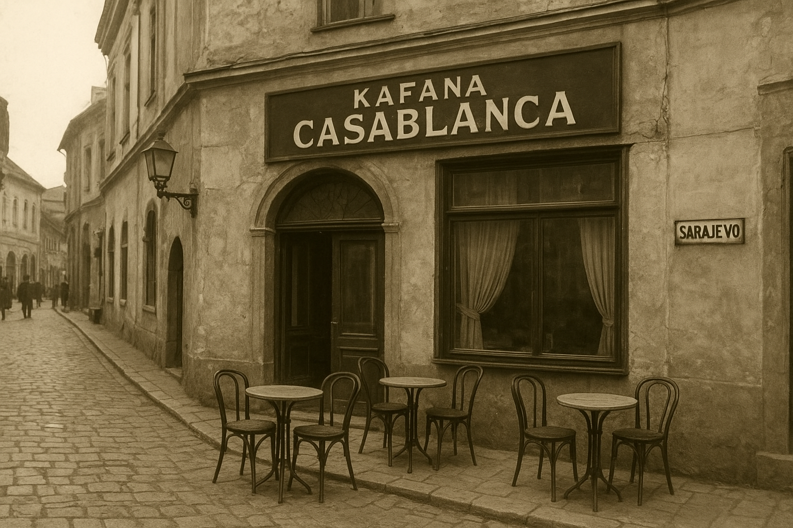
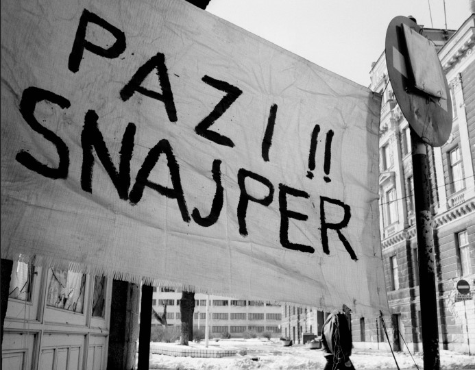
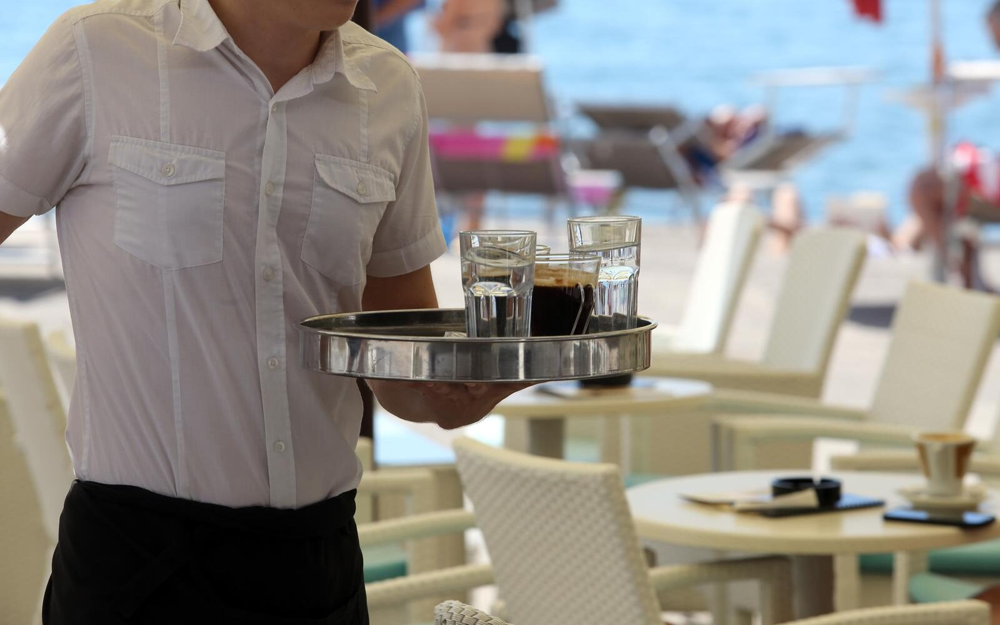
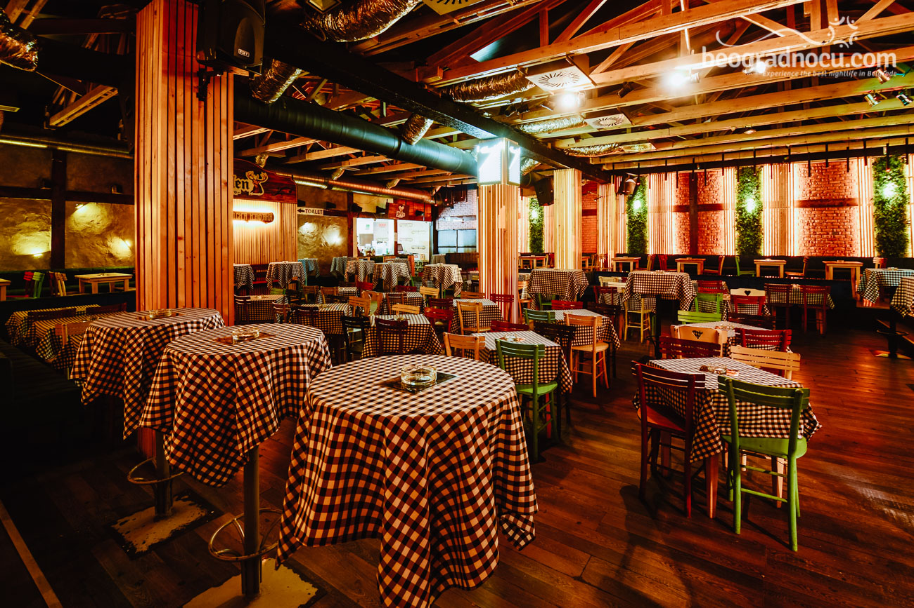

Osnivanje (1984.)
Godine 1984., u jednoj sarajevskoj uličici, susreli su se tri prijatelja: Meho, koji je vjerovao da su kafane temelj civilizacije; Stipo, ekonomista koji je jedinu ispravnu računicu u životu vidio u tome da se pivo prodaje jeftinije od gazirane vode; i Zuka, koji je imao "štelu" za nabavku stolica iz jednog raspuštenog kina. Tako je rođena "Casablanca". Iz početka, naziv je trebao biti "Uranak", ali Meho je jedne noći sanjao Humphreyja Bogarta iz kultnog filma "Casablanca" i odlučio da samo "Casablanca" može odati duh mjesta gdje se sudbine prepliću uz kafu i rakiju.
Zlatno doba (1985.–1991.)

"Casablanca" je postala legendarna u kratkom roku, čuvši se o njoj glas da ima najbolju kahvu u gradu. Konobar Miralem iz Krvavih Njiva vladao je prostorijom kao kapetan broda. Znao je sve: tko pije kratku, a tko dugu; tko je ostavio ženu, a tko je dobio otkaz; i, najvažnije, tko je platio zadnji račun.
Tu se okupljala najraznolikija družina: pjesnici koji su pisali sonete na salvetama, profesori filozofije, lokalni sportski "stručnjaci", trgovci i poneki gost koji je tvrdio da je rođak Waltera Perića. Ispostavilo se da je to bio Dino, mesar iz Dobrinje, ali su mu svi, iz poštovanja, govorili "Gospodine Walter".
Opsada (1992.–1995.)
Kafana nikada nije zatvorila svoja vrata. U najtežim danima, "Casablanca" je postala oaza normalnosti. Struja generatora dovoljna je bila za jednu sijalicu i mali radio. Cijene su bile u markama, dolarima, konzervama i nafti – štagod imao. Miralem je, poput šefa države, održavao red, a rasprave o politici bile su strogo zabranjene. Umjesto toga, raspravljalo se o fudbalu i filmovima. Legenda kaže da je jedan profesor iz Grbavice prešao liniju fronta samo da bi došao na svoju subotnju kafu: "Za ovakvu kahvu vrijedi crknuti", rekao je.
Poslijeratno doba (1996.–2010.)
Kada je mir zadošao, "Casablanca" se polako oporavljala. Stipe je uvjerio Mehu i Zuku da je vrijeme za "gentrifikaciju". Kupili su novi šporet, zalijepili poster maršala Tita pored Bogarta i uveli sataraš. Mlada generacija je otkrila šarm mjesta. Dolazili su studenti, novinari i turisti. Miralem je sada imao pomoćnika, Izeta, koji je sve narudžbe unosio u tablet, a zatim ih opet prepisivao na papirić jer "tehnologiji se ne vjeruje".
Moderna era (2011.–danas)
Danas je "Casablanca" živi spomenik. Stipe je u penziji, Meho sanja o proširenju u susjednu prodavnicu cipela, a Zukin sin vodi IT sektor – popravlja wifi. Miralem je sada vlasnik, sijed ali nepogrešiv. Kada ga turisti pitaju: "Je li ovo prava Casablanca iz filma?", on odgovara: "Gospođo, ovo je puno bolje. Ovdje ima pravih ljudi."
I tako, Casablanca ostaje mjesto gdje se sudbine prepliću uz kafu i rakiju, gdje se i dalje priča, smije i pamti. A Miralem, naravno, nikada ne zaboravi tko je pio "onaj put kad je pao snijeg".